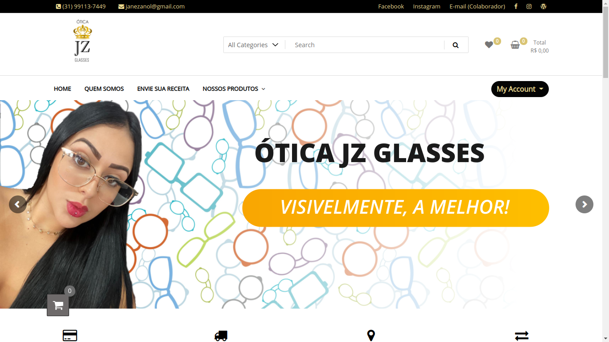

Hacking √© a incr√≠vel arte de usar um lim√£o para montar uma pilha. Se tudo falhar, fa√ßa uma limonada üòâ
Atuo há mais de 5 anos como professor e freelancer, prestando consultoria e assistência técnica na área de desenvolvimento WEB. Atualmente faço graduação em Segurança da Informação com ênfase em defesa cibernética e hardware hacking, além de participar ativamente de diversos cursos, palestras e eventos da área de hacking e segurança. Faço parte da Sociedade Brasileira de Computação desde 2019.
BiografiaSkills
Habilidades & Tecnologias
HTML/CSS95%
WordPress & Web Hosting90%
Java Script85%
PHP/MYSQL75%
Hexo, Jekyll e outros geradores est√°ticos65%
Cases de Sucesso
Projetos
Nos √∫ltimos anos, tive a oportunidade de traduzir, desenvolver, publicar e garantir o funcionamento de mais de 250 sites e projetos, hospedados no Brasil e no exterior.
+150
Clientes Atendidos
+2000
Alunos Formados
Implementação de configurações de desempenho e indexação do site ao Google, utilizando técnicas de SEO.
acsimao.com
Tecnologias: WordPress, Let's Encrypt, Google Site Kit, PageSpeed Insights. (*Job realizado como PJ pela Agência Aprimora WEB)Criação e Implementação de layout para landing-pages de divulgação em campanhas de marketing.
anamonteiro.adv.br
Tecnologias: WordPress, Elementor, TAGs Google Analytics, API Google Maps, API WhatsApp. (*Job realizado como PJ pela Agência Aprimora WEB)Desenvolvimento do site; planejamento e execução de testes de segurança e usabilidade.
agocursos.com.br
Tecnologias: WordPress, Elementor, WAFs, PHP, JS, HTML, CSS, PageSpeed Insights, BurpSuite, Wireshark, NMAP, Maltego, Nikto.Realização de testes de usabilidade (UX) e desempenho em plataforma de User Testing.
benandjerry.com.br
Tecnologias: HTML, CSS, DevTools.Desenvolvimento de site estático com Hexo para distribuição de materias para aulas de T.I. e Administração.
zmdy.github.io/aulas.txt
Tecnologias: Markdown, Hexo, CSS, JS, Git/GitHub.Projeto de osciloscópio baseado em web para o Arduino.
Arduino Signals
Tecnologias: Arduino, PHP, JS, HTML, CSS, Git/GitHub.Projeto de calculadora web para entusistas e estudantes de Astronomia.
AstroCalc
Tecnologias: JS, HTML, CSS, Git/GitHub.Projeto de framework para transormar arquivos de texto (txt, markdown) em apresentações de slides.
Bonisa
Tecnologias: MarkDown, RegEx, JS (paixão da minha vida <3), HTML, CSS, Git/GitHub.Implementação de melhorias no layout do site.
fernandabaldanza.adv.br
Tecnologias: WordPress, Elementor, CSS, API WhatsApp. (*Job realizado como PJ pela Agência Aprimora WEB)Resturação de site, implementação de ajustes de layout.
ferrazadvocaciato.com
Tecnologias: WordPress, Elementor, CSS, API WhatsApp. (*Job realizado como PJ pela Agência Aprimora WEB)Codificação e estilização do layout utilizado no site e aplicativo do Congresso Ganepão 2021
ganepao.com.br
Tecnologias: CSS. (*Job realizado como PJ pela Agência Aprimora WEB)Rebranding do site institucional; planejamento e execução de testes de segurança e usabilidade no mesmo.
grupocni.com.br
Tecnologias: WordPress, WAFs, PHP, JS, HTML, CSS, PageSpeed Insights, BurpSuite, Wireshark, NMAP, Maltego, Nikto, WPScan.Implementação de layout para landing-pages de divulgação em campanhas de marketing.
jaymepena.com.br
Tecnologias: WordPress, Elementor, CSS, API WhatsApp. (*Job realizado como PJ pela Agência Aprimora WEB)Publicação e configuração do site em serviço de web hosting. Implementação de estratégias de SEO, desempenho e segurança.
jeanlimaadvocacia.com.br
Tecnologias: WordPress, Elementor, API WhatsApp, Let's Encrypt, Google Site Kit, PageSpeed Insights. (*Job realizado como PJ pela Agência Aprimora WEB)Publicação e configuração do site em serviço de web hosting. Implementação de estratégias de SEO, desempenho e segurança.
jefersonribeiro.adv.br
Tecnologias: WordPress, Elementor, API WhatsApp, Let's Encrypt, Google Site Kit, PageSpeed Insights. (*Job realizado como PJ pela Agência Aprimora WEB)Inserção de artigos e postagens em blog para divulgação em campanhas de marketing.
lucasbento.adv.br
Tecnologias: WordPress, Elementor, HTML, CSS. (*Job realizado como PJ pela Agência Aprimora WEB)Publicação e configuração do site em serviço de web hosting. Implementação de estratégias de SEO, desempenho e segurança.

mondegoengenharia.com
Tecnologias: WordPress, Elementor, API WhatsApp, Let's Encrypt, Google Site Kit, PageSpeed Insights. (*Job realizado como PJ pela Agência Aprimora WEB)Publicação e configuração do site em serviço de web hosting. Implementação de estratégias de SEO, desempenho e segurança.
origna.com.br
Tecnologias: WordPress, Elementor, API WhatsApp, Let's Encrypt, Google Site Kit, PageSpeed Insights. (*Job realizado como PJ pela Agência Aprimora WEB)Publicação e configuração do site em serviço de web hosting. Ajustes no layout do site.
oticajzglasses.com.br
Tecnologias: WordPress, Elementor, API WhatsApp, Google Site Kit.Desenvolvimento e publicação da plataforma; planejamento e execução de testes de segurança e usabilidade.
agocursos.com.br/app
Tecnologias: WordPress, Elementor, Woocomerce, LearnPress, WAFs, PHP, JS, HTML, CSS, PageSpeed Insights, BurpSuite, Wireshark, NMAP, Maltego, Nikto.Implementação de novos componentes e criação de logo para o simulador de circuitos digitais SimcirJS.
Simcir JS
Tecnologias: JS, HTML, CSS, Git/GitHub, SVG.Instalação e configuração de encurtador de link ./src/personalizado - YOURLS.

agocursos.com.br
Tecnologias: YOURLS: Your Own URL Shortener (Encurtador de Links open-source), PHP, MySQL, CSS, Sleeky (tema modificado para atender a identidade visual da empresa).Publicação e configuração do site em serviço de web hosting. Implementação de estratégias de SEO, desempenho e segurança.
psicodivertidamente.com.br
Tecnologias: WordPress, Elementor, API WhatsApp, Let's Encrypt, Google Site Kit, PageSpeed Insights. (*Job realizado como PJ pela Agência Aprimora WEB)Publicação e configuração do site em serviço de web hosting. Implementação de estratégias de SEO, desempenho e segurança.
rosaluzboutique.com.br
Tecnologias: WordPress, Elementor, API WhatsApp, Let's Encrypt, Google Site Kit, PageSpeed Insights. (*Job realizado como PJ pela Agência Aprimora WEB)Correção de bugs em plugin do WhatsApp, devido a cinompatibilidade em dispositivos iOS/Apple; Implementação de layout para landing-pages.
wrsa.adv.br
Tecnologias: WordPress, Elementor, API WhatsApp, JS, PHP. (*Job realizado como PJ pela Agência Aprimora WEB)Publicação e configuração do site em serviço de web hosting. Implementação de estratégias de SEO, desempenho e segurança.
zillionempreendedorismo.com.br
Tecnologias: WordPress, Elementor, API WhatsApp, Let's Encrypt, Google Site Kit, PageSpeed Insights. (*Job realizado como PJ pela Agência Aprimora WEB)Experiências Profissionais
Professor & Freelancer
Atuo há mais de 5 anos como professor e freelancer, prestando consultoria e assistência técnica na área de desenvolvimento WEB. Confira os locais que já tive a oportunidade de atuar profissionalmente.
Analista de Suporte Técnico
Agência Aprimora WEB
Mar. 2021 - Atualmente
Consultoria em atividades de publicação e manutenção de sites institucionais, e-coomerces e landing pages construídas em WordPress. Suporte técnico e manutenção preventiva/corretiva referente a problemas de configuração, segurança, SEO e afins nos sites e e-mails profissionais dos clientes da agência.Consultor de T.I. & Mentor de Cursos
AGO Cursos
Out. 2020 - Atualmente
Desenvolvimento e gerenciamento de websites e aplicações WEB (link shortener, WordPress, Tutor/Open edX, QR Code ); Consultor em live streamings e cursos; Mentor de cursos livres em plataforma EAD.Freelancer
Ótica JZ Glasses
Out. 2020 - Mai. 2021
Desenvolvimento e gerenciamento de e-comerce + site institucional; Acompanhamento de métricas e KPIs em posts, anúncios e stories de redes sociais e site;Professor
CNI - Centro de Formação Profissional
Out. 2019 - Out. 2020
Ministro de aulas presenciais de informática básica/avançada; manutenção e redes de computadores; e administração. Help desk e suporte técnico-pedagógico aos alunos (presencial e EAD); Auxílio na gravação, edição e postagem de conteúdos EAD; gerenciamento de sites;Professor
Zanol Prime Cultural Institute
Set. 2018 - Out. 2019
Suporte e monitoria aos alunos dos cursos de informática e administração; Organização e realização de palestras e eventos culturais e pedagógicos; Realização de atividades administrativas (atendimento, relatórios pedagógicos, etc) inerentes à função;Estagiário Administrativo
NSI - Instituto Profissionalizar
Jun. 2018 - Out. 2018
Atendimento ao público, controle de caixa, agendamentos de aulas e provas, e telemarketing ativo (vendas e cobranças)Pesquisador Júnior de Iniciação Científica
CEFET-MG/FAPEMIG
Mar. 2016 - Set. 2017
Desenvolvimento de pesquisa multidisciplinar (Biologia, Eletrônica e Programação) visando alternativas para o controle de mosquitos.Monitor de Informática
Cedaspy Professional School
Mai. 2015 - Nov. 2015
Suporte pedagógico presencial aos alunos; retirada de dúvidas e acompanhamento nos laboratórios de aulas teóricas e práticas.Formação Acadêmica
Pesquisador & Estudante
Iniciei os meus estudos em Informática e Computação no ano de 2014 e não parei desde então! Confira alguns cursos que fazem parte da minha formação acadêmica.
Técnico em Eletrônica
Escola Politécnica Brasileira - ECID
Formação em 2022 33%Superior em Defesa Cibernética
Universidade Est√°cio de S√°
Formação em 2022 60%
Outros Cursos realizados:
Técnico em Informática - CEFET-MG - 2016-2017 Trancado
Capacitação em Informática e Redes - Cedaspy - 2014-2016 100% concluído
Formação em Desenvolvimento WEB - CNI - 2013-2014 100% concluído
Inglês - CENEX/UFMG - 2013-2015 100% concluído
Biografia
Membro da Sociedade Brasileira de Computação (SBC) desde 2019, atualmente divido meu tempo entre tarefas acadêmicas e profissionais. Atuo já há alguns anos como professor de Informática e Administração em importantes instituições de Belo Horizonte, tendo a possibilidade de vivenciar as mais diversas (e até mesmo inusitadas) dúvidas e questionamentos, sempre me esforçando para resolvê-las e saná-las da melhor forma possível.
Como web designer e desenvolvedor web tive a oportunidade de trabalhar na construção, tradução, hospedagem e manutenção de mais de 250 websites institucionais e e-commerces. Como um diferencial em meus serviços, busco trazer o know-how que adquiro participando de treinamentos e eventos na área de desenvolvimento, hacking e segurança para garantir aos clientes por mim atendidos acesso às mais modernas tecnologias e estratégias.
Enquanto estudante e pesquisador, pude participar de diversos projetos de iniciação científica nas áreas de eletrônica e computação aplicadas à saúde pública. Ainda hoje contribuo e participo de projetos open-source, fórums, grupos e programas de bug bounty. Sou defensor da filosofia do Software Livre e acredito que as tecnologias computacionais devem ser inclusivas, focadas na boa-experiência de uso, e capazes de mudar a vida de todos.
Tech Skills
Tecnologias
Como desenvolvedor, possuo minhas preferências a respeito de linguagens e tecnologias. Para os meus trabalhos, em epecial, gosto de utilizar as tecnologias abaixo:
Em meu GitHub contribuo e mantenho projetos open-source voltados para a √°rea educacional e de algumas ferramentas e scripts √∫teis para o dia a dia.
HTML, CSS, JS
Alguns projetos √∫teis para devs e hackers.
Recursos diversos - Awesome | Dev Tools | Hacking Tools | Design Tools
Scan de Tecnologias - Wappalyzer
Open Web Data - Commom Crawl
Repositório de APIs - Programmable Web
Maiores riscos de segurança na WEB - OWASP Top Ten